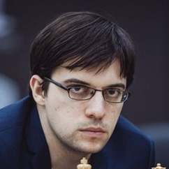

Шахматы
Личные встречи*
участников турнира претендентов 2020. Сводная таблица
*Учитывались только партии с классическим контролем времени.
Учтены партии до начала турнира претендентов.
По клику на ячейку таблицы открывается подробная история данной пары
1

|
2

|
3

|
4

|
5  |
6

|
7

|
8 | |||
| 1 |
|
Фабиано
Каруана
|
|
+2 =5 -3 5 ◻ ◼ 5 |
+3 =12 -3 5 ◻ ◼ 13 |
+0 =6 -1 4 ◻ ◼ 3 |
+7 =22 -4 16 ◻ ◼ 17 |
+3 =26 -3 15 ◻ ◼ 17 |
+0 =5 -5 3 ◻ ◼ 7 |
+1 =0 -0 1 ◻ ◼ 0 |
| 2 |
|
Дин
Лижень
|
+3 =5 -2 5 ◻ ◼ 5 |
|
+2 =12 -1 9 ◻ ◼ 6 |
+1 =7 -2 4 ◻ ◼ 6 |
+2 =10 -5 8 ◻ ◼ 9 |
+2 =21 -2 12 ◻ ◼ 13 |
+6 =7 -3 6 ◻ ◼ 10 |
+0 =3 -0 2 ◻ ◼ 1 |
| 3 |
|
Александр
Грищук
|
+3 =12 -3 13 ◻ ◼ 5 |
+1 =12 -2 6 ◻ ◼ 9 |
|
+2 =7 -2 4 ◻ ◼ 7 |
+2 =15 -1 11 ◻ ◼ 7 |
+1 =12 -2 6 ◻ ◼ 9 |
+1 =6 -2 5 ◻ ◼ 4 |
+1 =2 -0 2 ◻ ◼ 1 |
| 4 |
|
Ян
Непомнящий
|
+1 =6 -0 3 ◻ ◼ 4 |
+2 =7 -1 6 ◻ ◼ 4 |
+2 =7 -2 7 ◻ ◼ 4 |
|
+1 =5 -6 5 ◻ ◼ 7 |
+3 =2 -3 2 ◻ ◼ 6 |
+2 =2 -1 3 ◻ ◼ 2 |
+0 =1 -0 0 ◻ ◼ 1 |
| 5 |
Максим
Вашье-Лаграв
|
+4 =22 -7 17 ◻ ◼ 16 |
+5 =10 -2 9 ◻ ◼ 8 |
+1 =15 -2 7 ◻ ◼ 11 |
+6 =5 -1 7 ◻ ◼ 5 |
+3 =24 -3 17 ◻ ◼ 13 |
+0 =3 -0 2 ◻ ◼ 1 |
+1 =1 -0 1 ◻ ◼ 1 |
||
| 6 |
|
Аниш
Гири
|
+3 =26 -3 17 ◻ ◼ 15 |
+2 =21 -2 13 ◻ ◼ 12 |
+2 =12 -1 9 ◻ ◼ 6 |
+3 =2 -3 6 ◻ ◼ 2 |
+3 =24 -3 13 ◻ ◼ 17 |
|
+1 =4 -3 4 ◻ ◼ 4 |
+2 =0 -0 0 ◻ ◼ 2 |
| 7 |
|
Ван
Хао
|
+5 =5 -0 7 ◻ ◼ 3 |
+3 =7 -6 10 ◻ ◼ 6 |
+2 =6 -1 4 ◻ ◼ 5 |
+1 =2 -2 2 ◻ ◼ 3 |
+0 =3 -0 1 ◻ ◼ 2 |
+3 =4 -1 4 ◻ ◼ 4 |
|
+0 =1 -0 1 ◻ ◼ 0 |
| 8 |
Кирилл
Алексеенко
|
+0 =0 -1 0 ◻ ◼ 1 |
+0 =3 -0 1 ◻ ◼ 2 |
+0 =2 -1 1 ◻ ◼ 2 |
+0 =1 -0 1 ◻ ◼ 0 |
+0 =1 -1 1 ◻ ◼ 1 |
+0 =0 -2 2 ◻ ◼ 0 |
+0 =1 -0 0 ◻ ◼ 1 |
||